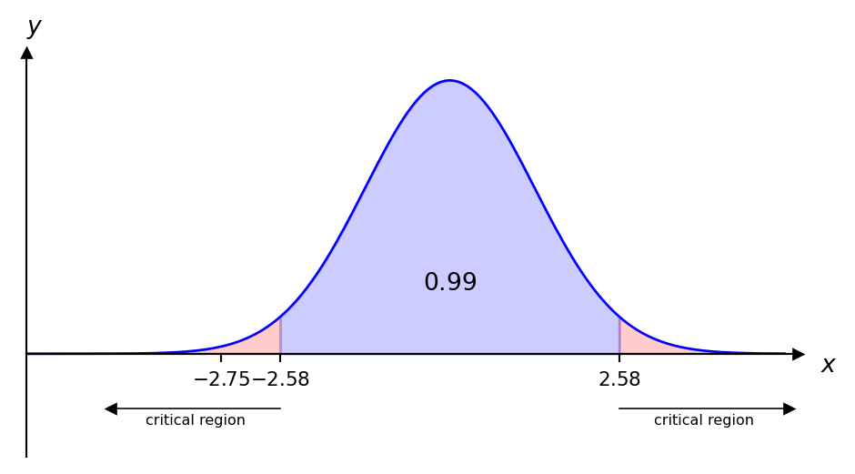
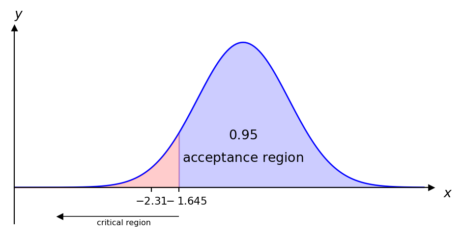
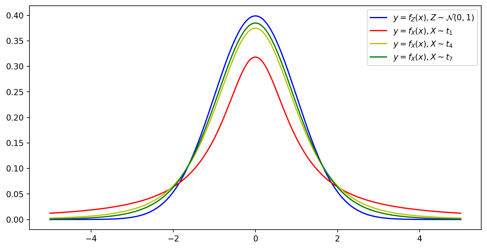

\[ \renewcommand{\P}{\mathbb{P}} \renewcommand{\E}{\mathbb{E}} \newcommand{\R}{\mathbb{R}} \newcommand{\var}{\mathrm{Var}} \newcommand{\cov}{\mathrm{cov}} \newcommand{\corr}{\mathrm{corr}} \newcommand{\dx}{\,\mathrm{d}x} \newcommand{\dy}{\,\mathrm{d}y} \newcommand{\eps}{\varepsilon} \]
A statistical hypothesis is an assertion concerning the probability distribution of one or more random variables.
Tossing a coin: let \(p\) be the probability the coin lands heads. We formulate two hypotheses: \[ H_0: p = \tfrac{1}{2} \quad \text{(fair coin, \emph{null hypothesis})}, \qquad H_1: p \neq \tfrac{1}{2} \quad \text{(unfair coin, \emph{alternative hypothesis})}. \] The task is to decide, from data such as \(H,H,T,H,T,T,H,\dots\), whether to reject \(H_0\).
The critical region of a statistical test is the set of values of the test statistic which lead us to reject \(H_0\). The acceptance region is the set of values leading us to fail to reject \(H_0\).
Some statisticians say a test can “accept” or “reject” \(H_0\); others prefer “reject” or “fail to reject” \(H_0\), avoiding the word “accept”.
If \(H_1\) is two-sided (e.g. \(H_1:\mu\neq\mu_0\)), we use a two-tailed test. If \(H_1\) is one-sided (e.g. \(H_1:\mu>\mu_0\) or \(\mu<\mu_0\)), we use a one-tailed test.
The probability of a Type I error is denoted \(\alpha\); this is the significance level of the test. E.g. \(\alpha=0.05\): “testing \(H_0\) at the 5% level.”
An alternative to critical regions: \(p\)-values. We calculate the probability of a value equal to, or more extreme than, the test statistic. For a one-tailed test this is the \(p\)-value, compared with \(\alpha\); for a two-tailed test it is \(\frac{p\text{-value}}{2}\), compared with \(\frac{\alpha}{2}\).
A Type I error occurs if \(H_0\) is rejected when it is true. A Type II error occurs if \(H_0\) is not rejected when it is false.
Strategy (typical order of actions):
If \(X\sim N(\mu,\sigma^2)\), then \(\bar{X}\sim N\bigl(\mu,\tfrac{\sigma^2}{n}\bigr)\). Given a sample \(x_1,\ldots,x_n\), we calculate \(\bar x\) and construct the test statistic \[ z=\frac{\bar{x}-\mu}{\sigma/\sqrt{n}}, \] then compare with the critical value(s) or use the \(p\)-value approach.
A machine produces items of nominal mass 1kg; \(X\sim N(\mu,(0.02)^2)\). If \(\mu\neq1\) the machine needs correcting. The mean of 25 randomly selected items was \(0.989\)kg. Test \(H_0:\mu=1\) at the \(1\)% level.
\[ H_0:\mu=1, \qquad H_1:\mu\neq1, \qquad \alpha=0.01. \]
Since \(\P(Z\leq2.58)=0.995\), the critical region is \(|z|>2.58\), and \[ z=\frac{0.989-1}{0.02/5}=-2.75. \]

Since \(-2.75\) is in the critical region, we reject \(H_0\) at the \(1\)% level: the machine should be corrected.
\(p\)-value approach: \(\P(Z\geq-2.75)=0.003<0.005\ (\tfrac{\alpha}{2})\), so we reject \(H_0\).
1. Calculate the statistic (\(z\), \(t\), …).
2a. \(p\)-value approach: if the statistic \(>0\), calculate \(1-F(\text{stat})\); if \(<0\), calculate \(F(\text{stat})\); if two-tailed, double the result. Compare \(p\) with \(\alpha\): \(p<\alpha\Rightarrow\) reject \(H_0\); \(p\geq\alpha\Rightarrow\) do not reject.
2b. Critical-value approach: find the critical value \(z_{cr}\) (or \(t_{cr}\)) for \(\alpha\) (or \(\tfrac{\alpha}{2}\), two-tailed) from a table/Python, and compare \(|z|\) with \(z_{cr}\): \(|z|>z_{cr}\Rightarrow\) reject \(H_0\).
For samples of size \(n_1,n_2\) from \(N(\mu_1,\sigma_1^2)\), \(N(\mu_2,\sigma_2^2)\) (variances known), \((\bar{x}_1-\bar{x}_2)\sim N\bigl(\mu_1-\mu_2,\ \tfrac{\sigma_1^2}{n_1}+\tfrac{\sigma_2^2}{n_2}\bigr)\), giving the test statistic \[ z=\frac{(\bar{x}_1-\bar{x}_2)-(\mu_1-\mu_2)}{\sqrt{\tfrac{\sigma_1^2}{n_1}+\tfrac{\sigma_2^2}{n_2}}}. \]
Samples of size 25 from \(X\sim N(\mu_1,66)\) and \(Y\sim N(\mu_2,66)\) give \(\bar x=116\), \(\bar y=109\). Test at the \(5\)% level: \[ H_0:\mu_1-\mu_2=12, \qquad H_1:\mu_1-\mu_2\neq12. \] Critical region \(|z|>1.96\). Test statistic: \[ z=\frac{(116-109)-12}{\sqrt{2\cdot\tfrac{66}{25}}}=-2.17. \] Since \(|{-2.17}|>1.96\), reject \(H_0\).
The CLT lets us test hypotheses about means of non-normal distributions, provided the sample is large (30+): \(\bar{X}\approx N\bigl(\mu,\tfrac{\sigma^2}{n}\bigr)\), and the test statistic is only approximately \(N(0,1)\).
A golfer’s round has mean \(84.1\), sd \(2.6\). After lessons, mean is \(83.1\) over 36 rounds. Test at \(5\)%: \[ H_0:\mu=84.1, \qquad H_1:\mu<84.1 \text{ (one-tailed)}, \qquad z_{cr}=1.645. \] \[ z=\frac{83.1-84.1}{2.6/6}=-2.31. \] Since \(|z|=2.31>1.645\), reject \(H_0\): her game has improved.

\(p\)-value approach: \(\P(Z\leq-2.31)=0.01044<0.05\), so we reject \(H_0\).
If \(x_1,\ldots,x_n\) is a sample (\(n\geq2\)) from \(X\sim N(\mu,\sigma^2)\), the random variable \[ T=\frac{\bar{x}-\mu}{s/\sqrt{n}} \] has a \(t\)-distribution with \((n-1)\) degrees of freedom.
Degrees of freedom = number of values free to vary. E.g. for 4 numbers \(a,b,c,d\) with mean \(5\) (so \(a+b+c+d=20\)): once 3 are known, the fourth is determined — only \(3=4-1=n-1\) are “free”. As \(n\to\infty\), the \(t\)-distribution tends to the normal; it has heavier tails for small degrees of freedom.

For \(X\sim N(\mu,\sigma^2)\) with \(\sigma^2\) unknown, testing \(H_0:\mu=\mu_0\): we estimate \(\sigma^2\) by the sample variance \(s^2\) and use \[ t=\frac{\bar{x}-\mu_0}{s/\sqrt{n}} \sim t_{n-1}. \]
Yarn breaking strength has mean \(21\)N. A treated sample of \(9\) lengths has mean \(22.75\), sd \(2.109\). Test at \(5\)%: \[ H_0:\mu=21, \qquad H_1:\mu>21 \text{ (one-tailed)}. \] Critical region: \(t>t_{0.05,8}=1.860\). \[ t=\frac{22.75-21}{2.109/\sqrt9}=2.5. \] Since \(2.5>1.860\), reject \(H_0\): the claim is supported at the \(5\)% level.
Used for “before”/“after” data on the same items. With \(n\) pairs and difference \(D=X_1-X_2\sim N(\mu_1-\mu_2,\sigma^2)\), testing \(H_0:\E(D)=\mu_0\): \[ t=\frac{\bar{D}-\mu_0}{s_D/\sqrt{n}} \sim t_{n-1}. \]
Ten joints of meat, each half frozen by process A or B; days to spoilage:
| Joint | 1 | 2 | 3 | 4 | 5 | 6 | 7 | 8 | 9 | 10 |
|---|---|---|---|---|---|---|---|---|---|---|
| A | 63 | 109 | 82 | 156 | 161 | 155 | 47 | 141 | 92 | 149 |
| B | 129 | 105 | 76 | 207 | 253 | 146 | 62 | 160 | 90 | 177 |
\(H_0:\mu_D=0\), \(H_1:\mu_D\neq0\) (two-tailed), \(D=B-A\).
| Pairs | 1 | 2 | 3 | 4 | 5 | 6 | 7 | 8 | 9 | 10 | Total | Mean |
|---|---|---|---|---|---|---|---|---|---|---|---|---|
| \(D\) | 66 | -4 | -6 | 51 | 92 | -9 | 15 | 19 | -2 | 28 | 250 | 25 |
| \(D-\bar D\) | 41 | -29 | -31 | 26 | 67 | -34 | -10 | -6 | -27 | 3 | 0 | |
| \((D-\bar D)^2\) | 1681 | 841 | 961 | 676 | 4489 | 1156 | 100 | 36 | 729 | 9 | 10678 |
\[ s_D^2=\frac{10678}{9}=1186.44, \qquad t=\frac{25-0}{\sqrt{1186.44/10}}=2.3. \] Critical region: \(|t|>t_{0.025,9}=2.26\). Since \(2.3>2.26\), reject \(H_0\): there is a difference between the processes.
For two independent samples \(X_1\sim N(\mu_1,\sigma^2)\), \(X_2\sim N(\mu_2,\sigma^2)\) (same unknown variance), we pool the variance estimate: \[ S^2 = \frac{(n_1-1)S_1^2+(n_2-1)S_2^2}{(n_1-1)+(n_2-1)}\quad\Bigl(=\tfrac{S_1^2+S_2^2}{2} \text{ if } n_1=n_2\Bigr). \] Test statistic (\(n_1+n_2-2\) degrees of freedom): \[ t=\frac{(\bar{x}_1-\bar{x}_2)-(\mu_1-\mu_2)}{S\sqrt{\tfrac1{n_1}+\tfrac1{n_2}}}. \]
8 people given water, 8 given an energy drink, then an endurance task:
| Mean | Std | |
|---|---|---|
| Water (\(x_1\)) | 12.2 | 2.4 |
| Energy drink (\(x_2\)) | 13.1 | 3.1 |
\(H_0:\mu_1-\mu_2=0\), \(H_1:\mu_1<\mu_2\) (one-tailed).
Pooled sd: \(S=\sqrt{\tfrac{2.4^2+3.1^2}{2}}=2.7722\). \[ t=\frac{(12.2-13.1)-0}{2.7722\sqrt{2/8}}=-0.6493, \qquad n_1+n_2-2=14 \text{ d.f.}, \qquad t_{0.05,14}=1.761. \] Since \(|-0.6493|<1.761\), we do not reject \(H_0\): no evidence the energy drink improves performance.